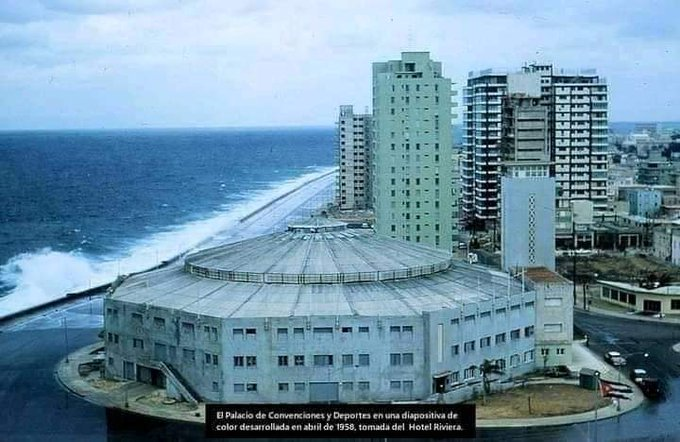
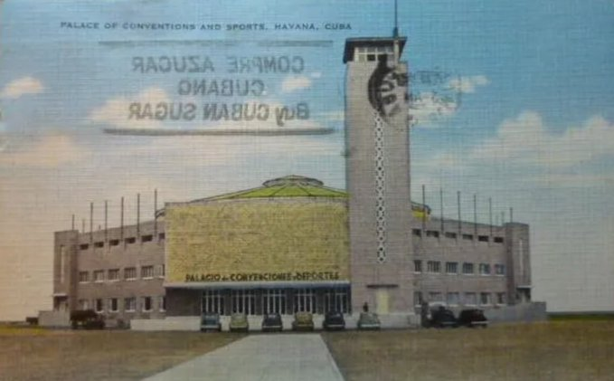

Los Hilos de Monik
Palacio de Convenciones y Deportes de La Habana
Publicado el 5 de marzo de 2021 - 7 tweets - Hilo original en Twitter
Mi prima, que sabe muy bien las cosas que me gustan, me ha pasado esta foto: es la primera vez que veo una imagen a color y tan de cerca del Palacio de Convenciones y Deportes de La Habana.
Y ya que estamos, hablemos un tin de este edificio
2
Construido en 1944, tuvo una corta vida. No solo era feo, sino que no tenía sentido urbanísticamente hablando.
La imagen dice que es de 1958, pero yo tenía entendido que lo demolieron en 1955. Los edificios de atrás son del 58. En fin ...
3
Las obras comenzaron en marzo de 1940, bajo las órdenes de Jaime Mariné, militar de origen catalán que participó en el golpe de Estado del 4 de septiembre de 1933 y a quien posteriormente Batista le otorgó el grado de Coronel, nombrándole Director General de Deportes.
4
La edificación contaba con instalaciones de boxeo, lucha, baloncesto, voleibol, etc., teniendo incluso una piscina bajo el tabloncillo y una pista de patinaje sobre hielo
Allí se exhibieron los "Ringling Brothers" y el "King American Circus"
5
Entre las últimas actividades celebradas en esta instalación, el 17 de noviembre de 1955, Ernest Hemingway recibiría la medalla de San Cristóbal de La Habana, concedida por el gobierno habanero.
6
Al final, hubo que demolerlo para poder continuar el Malecón desde G hasta la calle 8, lo que motivó la necesidad de un nuevo edificio: el “Palacio de los Deportes y Campos Deportivos de La Habana” o como hoy le llamamos: la Ciudad Deportiva.
7
En fin, el edificio me recuerda a la cárcel de Isla de Pinos, pero quien haya visto el Obelisco de Marianao, entenderá que sencillamente es la visualidad del estilo arquitectónico de los años 40
Y nada, esa cuenta como la curiosidad del día Cara burlona con ojos sonrientes